I primarily use Debian/Ubuntu/RedHat ecosystems, along with Ansible or Puppet, or even Chef at home.
I love building simple and composable things with tools like Docker, Ansible and a few custom scripts .
I used Nagios with Centreon, though I'm learning Riemann. For graphs I love Graphite with Grafana, and I leave my logs in ELK.
I have experience with Nginx, Apache, Tomcat, and various Rails servers. I like Postgresql and ElasticSearch too. I'd love to try Riak in production someday.
I'm really an expert in Redmine, though I already managed Jekyll, SPIP, Dokuwiki, Request Tracker and a lot of useful internal tools.
I like to track performance issue and debug various problems, using strace, netstat, tcpdump, ... or much high-level tools like Newrelic or Boundary.
A simple monitoring system to replace Nagios for a few dozens machines
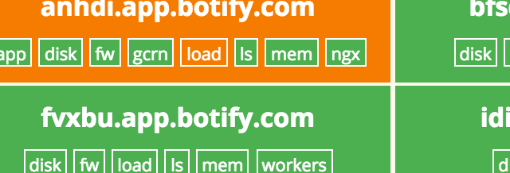made with ruby + ansible + python
A dashboard to analyze monthly AWS/OVH costs
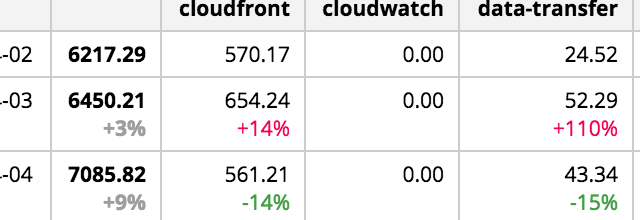made with sinatra + reactjs
Cartoque is an open-source CMDB built for medium scale datacenters
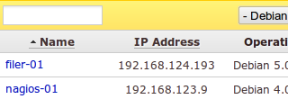Klou helps manage postdoc proposals for french PhD's
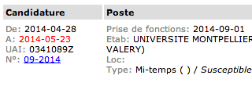made with rails + heroku
My blog, once powered by mephisto, simplelog and now nanoc3 on gh-pages
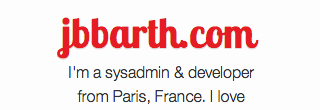One page app to visualize many cucumber reports in one consolidated page
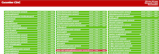Made some custom dashboards at $WORK based on Graphite data
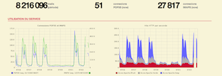made with graphitejs
A topbar with links and monitoring reports which can be externally injected
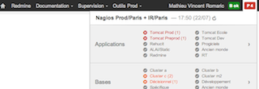made with custom JS + mod_substitute
Developed some private plugins for $WORK since 2007
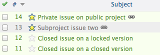see my other plugins here
Saves drafts of issues while you edit them so they don't get lost
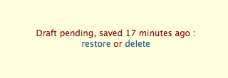Private comments for your Redmine instance, visible only by allowed roles
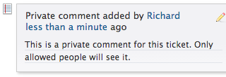Hierarchical organizations for big Redmine instances
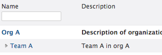Know which people have been notified on a specific issue
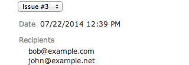Centralized errors & exceptions reporting for your redmine instance
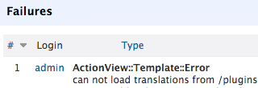Stick reminders (aka postits) on "My Page" so you don't forget important things!
Easy backup solution for your Redmine wikis. Allows full mirroring
CMDB interface for Redmine : allows you to link issues to your external CMDB
Authenticate to your Redmine instance through your existing CAS/SSO solution
Sudo-like powers for administrators ; you should not be root all the time !
Adds additional layers of security for your Redmine instance exposed on the Internet
Adds ability to automatically watch all issues in a project
Adds various fine-grained options for redmine notifications
Force private issues on some projects (where you want privacy between clients)
Base plugin which adds select2 to your redmine instance
Base plugin which adds ability to use Deface (view overrides) in your plugins
Base plugin which adds ability to use RSpec for your plugin tests
Force private issues on some projects (where you want privacy between clients)
Add some textile syntax to display issues attributes inside wiki sections
An experiment to show how Rails' asset pipeline could be activated in Redmine
Calculate priroity based on urgency and impact metrics as ITIL suggests
Limit visibility of issues by defining custom scopes on each issue
Include custom graphs in any wiki or issue (needs some ruby/js foo)
Builds a week-by-week workload calendar based on versions and load estimates
A custom theme for french minitry for sustainable development
A collection of useful scripts I use to manage my Redmine installations